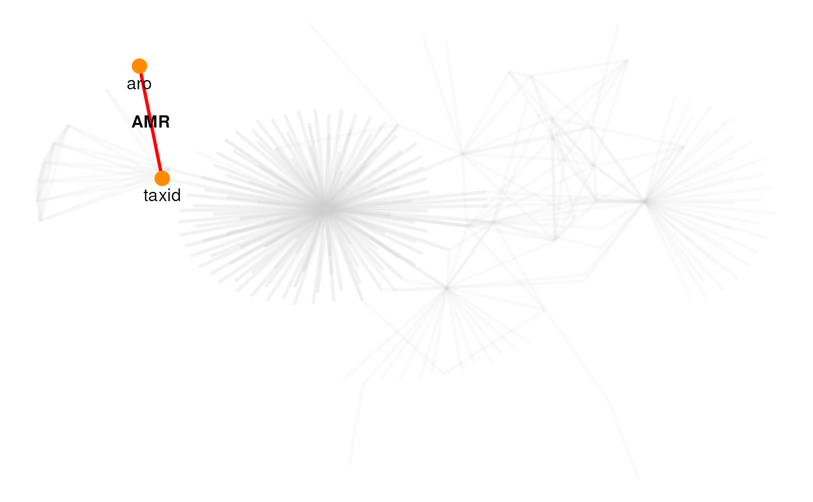

addResource includes a user-defined resource to the ariadne graph.
addResource(graph, ...)
# S4 method for class 'igraph'
addResource(graph, file, res.name = "Custom", force = FALSE, ...)An igraph object.
Additional arguments passed to fread.
Character scalar. The path to a local or remote file that
stores the linkmap between two features. It must be a table with two named
columns (features) and each row representing a binding between features.
Character scalar. The name of the resource that will
appear in the output graph. (Default: "Custom")
Logical scalar. Whether file should overwrite any
previously cached files with the same name. (Default: FALSE)
An igraph object.
# Retrieve resource graph
graph <- ariadne()
# Set URL to custom resource
url <- "https://ftp.ebi.ac.uk/pub/databases/amr_portal/releases/2025-12/"
url <- paste0(url, "genotype.csv.gz")
# Add resource to ariadne graph
graph <- addResource(
graph,
url,
res.name = "AMR",
select = c("taxon_id", "antibiotic_ontology"),
col.names = c("taxid", "aro")
)
# Search for newly added path
searchPath(graph, taxid ~ aro)
#> Path 1:
#> taxid -(AMR)-> aro
#>
# Plot first 5 paths excluding uniref50 and uniref100
plotPath(graph, taxid ~ aro, focus = TRUE)
#> Warning: Using alpha for a discrete variable is not advised.

# Find antibiotics related to E. coli (NCBI 562)
tax2aro <- weavePath(graph, taxid ~ aro, init = 562)
#> taxid -(AMR)-> aro